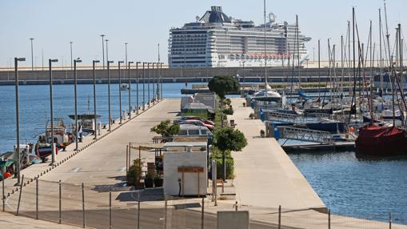
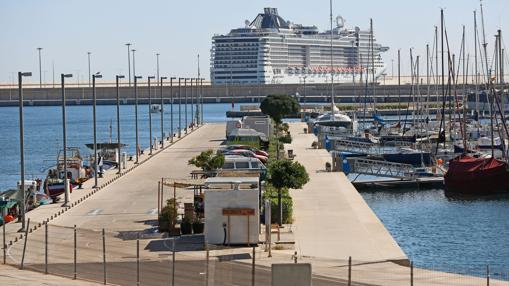
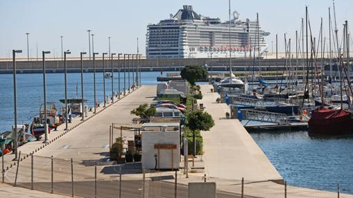
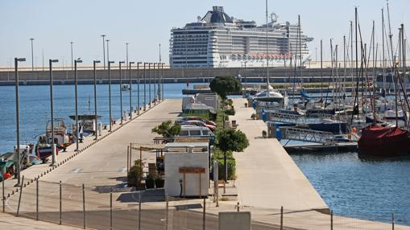

 

Historia
Las
Fallas
gastronomía
La
albufera
La historia de la ciudad de Valencia abarca desde la época anterior a la fundación formal de la ciudad cuando la región ya estaba habitada por pueblos prerromanos hasta la actualidad. Gracias a la fértil huerta sobre la que se sustenta, los alrededores de Valencia fueron ya una zona de alta densidad humana antes de su fundación en el siglo II a. C. por los romanos. Desde entonces, la ciudad ha constituido uno de los mayores núcleos urbanos de la península ibérica.